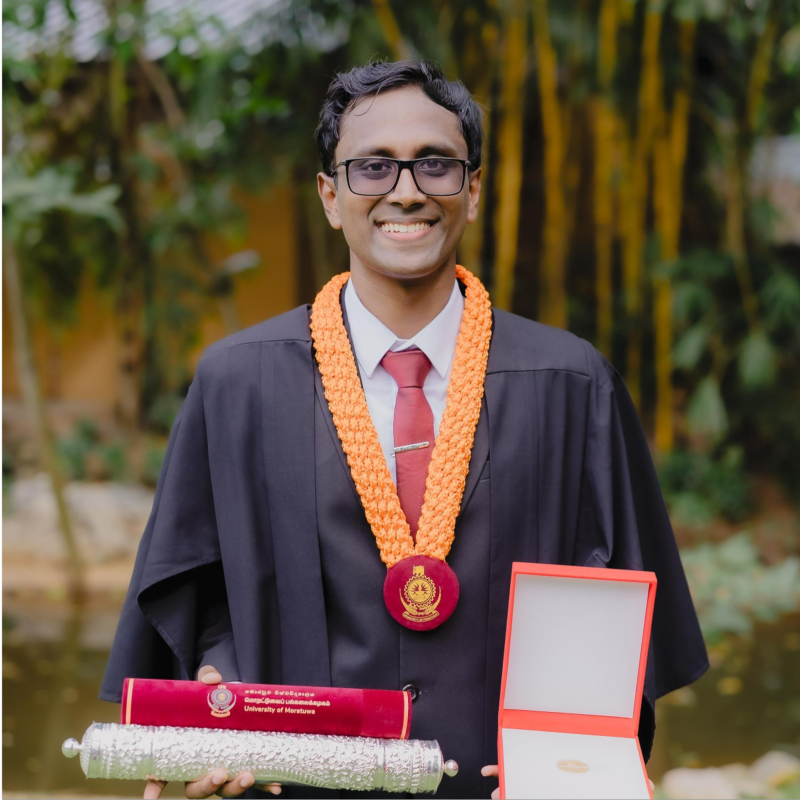

Built Environment / National University of Singapore
Malintha H. Fernando
A PhD student at National University of Singapore, researching cost-carbon optimisation in the built environment.

Educational Qualifications
- 2026-present
- Doctor of Philosophy (Built Environment), National University of Singapore
- 2021-2025
- BSc. (Hons) in Quantity Surveying, University of Moratuwa (First Class Honours)
Work Experience
- 2025-2026
- Research Assistant, University of Moratuwa
- 2025-2026
- Junior Contract Specialist, Jayakody Cost Consultants (Pvt) Ltd
- 2025-2026
- Visiting Lecturer, City School of Architecture, Colombo
- 2023
- Quantity Surveyor (Trainee), CLAG Consultancy (Pvt) Ltd
- 2023
- Quantity Surveyor (Trainee), Home Lands Skyline (Pvt) Ltd
Awards and Recognitions

Awards Received at the General Convocation of University of Moratuwa 2025
- Most Outstanding Graduand of University of Moratuwa, 2025 ("Vidya Jyothi Professor Dayantha S Wijeyesekere Award")
- Most Outstanding Graduand of the Faculty of Architecture, University of Moratuwa, 2025 ("Deshamanya Dr. Roland Silva Award")
International Academic Awards
- Best Presenter, FARU International Research Conference, 2025
- Best Presenter, International Conference on University-Industry Collaborations for Sustainable Development, 2025
- PAQS IWATA International Essay Competition – Certificate of Commendation, 2025
- Best Presenter, FARU International Research Conference, 2024
- Robin Jones Award – Equity, Diversity & Inclusion Award, 2024
- PAQS IWATA International Essay Competition Winner, 2024
Other International Awards
- Most Outstanding Secretary of RID 3220, RI Year 2022–23
- Most Outstanding Secretary of RID 3220, 2nd Quarter, RI Year 2022–23
- Spirit of Service Award, 2023
National Awards
- Top 5 National Teams, Unilever Challenge Case Study Competition, 2024
- Finalist, District 82 Toastmasters Humorous Speech Contest, 2023
- Finalist, All Island Announcing Competition “Allusion”, 2023
- 2nd Runner-up, Inter-University Public Speaking Contest “Ignite”, 2022
- Champion, All Island Public Speaking Contest “Viva-Voce”, 2021
- 2nd Runner-up, All Island Announcing Contest “Viva-Voce”, 2021
- Champions, All Island Case-study Competition “ThinkWave”, 2021
- 1st Runner-up, All Island Public Speaking Contest “Eloquence”, 2021
- Reserved Finalist, All Island Public Speaking Contest “Best Speaker”, 2021
- Best News Reader, National English Language Contest, 2018
Publications
Indexed journals
- A framework for assessing material circularity: Integrating key performance indicators across the building life cycle. Cleaner Production, 2026. DOI
- Fusion of machine learning to enhance the adaptability of lean construction maturity models (LCMMs). Journal of Engineering, Design and Technology, 2026. DOI
- Social procurement integrated roadmap for improved performance in infrastructure projects: The case of Sri Lanka. Journal of Legal Affairs and Dispute Resolution in Engineering and Construction, 2026. DOI
- AI-driven chatbot for social procurement in infrastructure projects: Empowering marginalised communities. Sustainable Development, 2026. DOI
- Leveraging social procurement within the construction industry for socio-economic advancement. Construction Innovation, 2026. DOI
- Adaptability of social procurement to manage procurement issues of affordable housing construction. International Journal of Construction Management, 2026. DOI
- Unified framework to integrate enterprise resource planning systems, electronic tendering and smart contracts in the construction industry. Journal of Legal Affairs and Dispute Resolution in Engineering and Construction, 2026. DOI
- Moving towards net-zero carbon low-rise commercial buildings in Sri Lanka. International Journal of Technology, 2025. [In Press]
Indexed book chapters
- Use of sustainable materials in road construction: Impact on road durability in Sri Lanka. Advances in Green Building Materials Adoption, Routledge, 2026. [In Press]
- Adaptability of Emerging Technologies by Sri Lankan Construction SMEs: A Social Sustainability Perspective. Springer, 2025. DOI
Indexed conference papers
- Integration of the concept of social procurement into construction procurement in Sri Lanka. 13th World Construction Symposium, 2025. DOI
- Investigating community-based participatory design approaches in planning and constructing public community facilities: a scoping review. 12th World Construction Symposium, 2024. DOI
Peer-reviewed conference papers
- Strategies for the use of sustainable materials in road construction: A qualitative Delphi study. FARU 2025. DOI
- Impact of use of sustainable materials on road construction. FARU 2024. DOI
Magazine articles
- Towards a sustainable future: Advancing equity and inclusion through social procurement in Sri Lanka. Bolgoda Plains, 2025. DOI
- Social procurement as a catalyst for achieving sustainable development goals in construction. IQSSL FOCUS, 2025.
Other publications
- සුසැඳි අනාගතයක් වෙනුවෙන් - ශ්රී ලංකාවට ‘සමාජ ප්රසම්පාදනය’, 2025. [In Press]
- PAQS 2025 - “Introducing Chatbots for Risk Management and Cost Optimisation”. [In Press]
- PAQS 2024 - “Digitalisation Towards a SMART Nation”. [In Press]
Contact Details
malintha.fernando7@gmail.com
malintha.fernando@u.nus.edu
LinkedIn · X · GitHub · Google Scholar · ORCID · ResearchGate